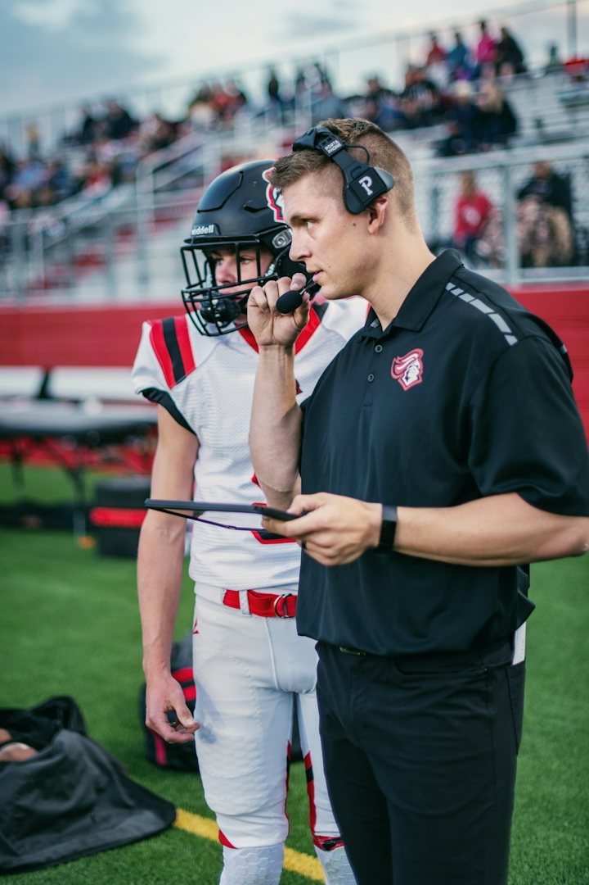
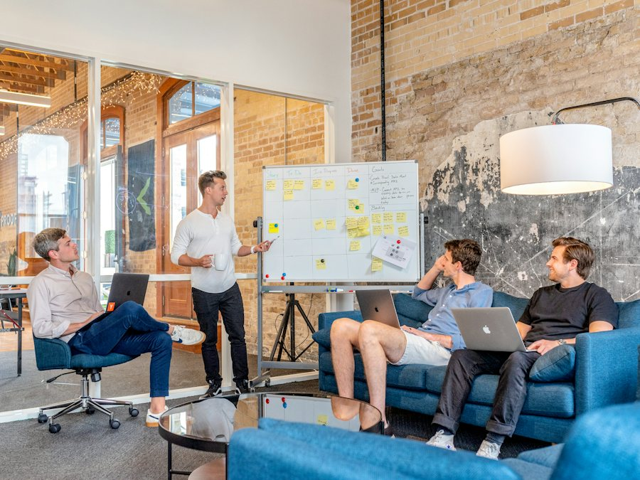

Warm-up · Step in, or wait?

A leader sees a situation. Decide in ten seconds. Then say WHY.
What does a good leader do?
Teacher notes · §1 Warm-up
Pedagógica
- Cada situación se decide en 10 segundos y se justifica con una frase. Acepta cualquier razón válida; la meta es que aparezca because y la estructura nueva sin presión.
- Si el alumno usa español, haz recast: "A good leader waits because…". Sin corregir en público.
- Máximo 5 minutos. No expliques gramática: la estructura steps in when se descubre en §3.
Engagement
- "Todos hemos tenido un jefe que se mete en todo y otro que desaparece. Hoy buscamos el punto medio."
- Cierra con: "Today you decide when a leader steps in."
Crecimiento
- Anota cuántas veces el grupo dividió su voto: es la mejor muestra de que el tema es discutible y por eso se puede hablar.
- Riesgo: Seguro. Temperatura: Mild.
Vocabulary · 12 words for leading

Tap to flip · listen to the word and the example
0 / 12 flippedRank the Register: six ways to step in
Pairs right 0 / 31. Put the six sentences in order: from the most DIRECT (top) to the most DIPLOMATIC (bottom). 2. Check. 3. Say which one you use with your boss, which one with a friend, and WHY.
Teacher notes · §2 Vocabulary
Pedagógica
- Voltea cada tarjeta: tú dices la palabra, el alumno repite y da su propio ejemplo con su trabajo real.
- VOC-12 Rank the Register (RANKING, registro): se ordenan seis formas de intervenir de la más directa a la más diplomática. Se califica por pares (directas / medias / diplomáticas); dentro del par el orden es discutible y ESO es la conversación. El alumno defiende qué forma usa con su jefe y cuál con un amigo.
- Vocabulario con tope B2: 12 términos. micromanage y hold back son el pico de dificultad; pide un ejemplo propio.
- Evita pedir comparaciones ("more polite than"): los comparativos son de Block 2. Usa very direct / very diplomatic.
Engagement
- "En una reunión real, la misma ayuda suena a ofensa o a apoyo según cómo la digas."
- Reparte una frase a cada alumno y que la diga con tono directo y luego diplomático.
Crecimiento
- Producto: ranking del grupo guardado en el portal.
- Venta: este bloque de registro es la base del módulo de feedback (S6) y de comunicación con jefes (Nivel 10).
Grammar · When does a leader step in?
Read the rule. Which words say WHEN?

A good leader steps in when there is a safety risk.
A good leader doesn't step in when people are learning.
When does a leader step in?
Say WHEN a leader steps in
1 · The rule
A leader steps in when the team is stuck.
2 · The exception
A leader doesn't step in when people are learning.
3 · The question
Does the leader step in when there is a risk?
| Statement, negative, question | Notice | |
|---|---|---|
| + | The chef steps in when a dish is not safe. | he / she / it + s: steps. The situation after when uses present simple. |
| − | The chef doesn't step in when a cook makes a small mistake. | doesn't + step (no s). |
| ? | Does the chef step in when the line is late? | Does + subject + step (no s). Answer: Yes, she does. / No, she doesn't. |
Today you describe what leaders do. Giving advice about what they should do comes in Block 3.
¿Qué es? Una forma de describir hábitos de un líder: steps in when… (interviene cuando…) y doesn't step in when… (no interviene cuando…).
¿Cómo se usa? A good leader steps in when there is a safety risk. A good leader doesn't step in when people are learning. Después de when va una situación en presente simple.
¿Para qué hoy? Para explicar con claridad cuándo ayudar y cuándo dejar que el equipo lo intente.
Cuidado: con he/she/it el verbo lleva -s en la frase afirmativa, pero NO en la negativa ni en la pregunta: She doesn't steps in. → She doesn't step in.
Choose the missing word
Interrogation: find the secret rules
Round 1 / 2 · Questions 01. A leader has THREE secret situations when he or she steps in. 2. Say a question out loud: “Does the chef step in when …?” 3. Tap the situation to get the answer. 4. Find all three “Yes” answers. Ask as few questions as you can: 6 or less is excellent.
Chef Luis
Mistakes at this level
Teacher notes · §3 Grammar
Pedagógica
- Un solo punto de lengua: steps in when / doesn't step in when / When does…step in? con presente simple. Explicación continua ≤5 min; el botón en español está oculto por defecto.
- Practice A es mecánica (≤1/3 del bloque). GRM-06 Interrogation (OCULTAMIENTO, meaningful): el alumno no ve las reglas del líder y las descubre preguntando. El contador de preguntas premia precisión. El alumno DICE la pregunta antes de tocar.
- Errores prioritarios: la -s en la tercera persona (afirmativa) y la -s sobrante después de doesn't / Does. Márcalos en voz alta cada vez.
- Límite de nivel: sin should ni could (Block 3) ni condicionales hipotéticos (Block 2). when aquí es hábito, no hipótesis.
Engagement
- "Es un juego de interrogatorio: tú preguntas, el líder responde Yes o No."
- Si el alumno encuentra las tres reglas en 4–5 preguntas, celébralo en voz alta.
Crecimiento
- Registra el número de preguntas por ronda: es tu métrica de claridad de formulación.
- Venta: la ronda del chef y el coach se pueden reutilizar en cursos de liderazgo corporativo.
Reading · Chef Marisol's note
Find the facts
Teacher notes · §4 Reading
Pedagógica
- Primera lectura en silencio (1 min) buscando solo CUÁNDO interviene la chef. Segunda: subrayar mentalmente step in when, take over y That's why.
- Texto de 88 palabras, nivel B2.2 (tope 100). Reutiliza because y That's why de S1 y stuck de la S2.
- Pregunta oral extra: "Do you trust your team like Marisol? Why or why not?" (sin should).
Engagement
- "Este es el estilo de la chef. En §5 el grupo la va a defender o a atacar."
Crecimiento
- Tarea opcional: escribir una nota de 5 líneas sobre un jefe que conocen, con steps in when.
Speaking · Defend your leader
1. Defend this sentence: “A good leader steps in when …” 2. The wall throws ONE objection at a time. 3. Answer in 45 seconds: “I see your point, but a good leader steps in when … because …” 4. Your partner decides: absorbed or dropped.
12 questions · always 2 follow-ups
Teacher notes · §5 Speaking
Pedagógica
- SPK-09 The Objection Wall (PRESIÓN, objeción): el alumno sostiene una postura ("A good leader steps in when…") y recibe 5 objeciones, una por una. Cada objeción se absorbe (responde con but + because) o se cae. Construye la estructura nueva bajo presión social suave.
- Grupo: A defiende, el resto lanza la objeción (tú la pantalla) y B decide; rota cada objeción. 1:1: tú lanzas y decides. Regla B2: sin notas, 45 segundos por respuesta.
- Marca 2 aciertos y 3 errores repetidos (la -s de tercera persona sigue siendo el error #1). Feedback en §7, no aquí.
- Límite de nivel: la respuesta es I see your point, but…. Sin should, sin hipótesis ("If a leader stepped in…" pertenece a Block 2).
Engagement
- "Cada ladrillo es una objeción. Si la absorbes, el muro se vuelve tuyo."
- Dale un nombre a cada objeción cuando la leas ("the Micromanager").
Crecimiento
- Mide: ladrillos absorbidos de 5. Es tu indicador de fluidez bajo presión.
- Venta: este formato se vende solo; funciona en entrenamientos de liderazgo y de ventas.
Mission · The Leadership Brief

The Leadership Brief
You advise three leaders. For each situation, brief your team: does the leader step in or wait, when, and why?
Group: each situation goes to one student in a breakout room. Your partner asks “Does the leader step in?” once per case. Rotate every 3 minutes.
1:1: you brief the teacher after each situation. The teacher asks “Why?” twice per case.
Success: 3 situations, each with the situation, the trigger (steps in when / waits when), the reason with because, and the result with so or That's why.
Teacher notes · §6 Mission
Pedagógica
- Marca cada movimiento solo cuando el alumno lo dice sin leer la tarjeta.
- Evidencia observable: situación, steps in when / doesn't step in when, razón con because y resultado con so / That's why. Clave de respuestas visible solo en Teacher view (hay un caso donde el líder espera: el alumno debe distinguir).
- No interrumpas: el feedback va en §7.
Engagement
- Anuncia en voz alta: "__ of 12 moves. Brief delivered!"
Crecimiento
- "In Session 6 you give feedback: direct, gentle or both."
- Conecta con la tarea final: una explicación de 3–4 minutos sobre cuándo un líder interviene.
Wrap-up · Better the second time
✓ Success
↑ Upgrade
✎ Repair
↻ 2nd try
Repeat one briefing with the teacher. Use the upgrades. Same task, better English.
60 seconds · 5 questions
My second try is better because…
You can say when a leader steps in.
Homework: write 5 sentences about a leader you know. When does this person step in? When do they wait? Use because. Next: Session 6.
Teacher notes · §7 Wrap-up
Pedagógica
- Máximo 2 aciertos y 3 correcciones de alto valor, anónimas. Luego segundo intento de un caso contigo.
- Exit quiz en voz alta: el alumno dice la respuesta antes del clic.
Engagement
- Compara con el §1: "Minute 1: 'step in or wait?'. Minute 58: you say when and why."
Crecimiento
- Registra: checklist de la misión, ladrillos absorbidos, preguntas en la ronda de Interrogation y ranking de registro.